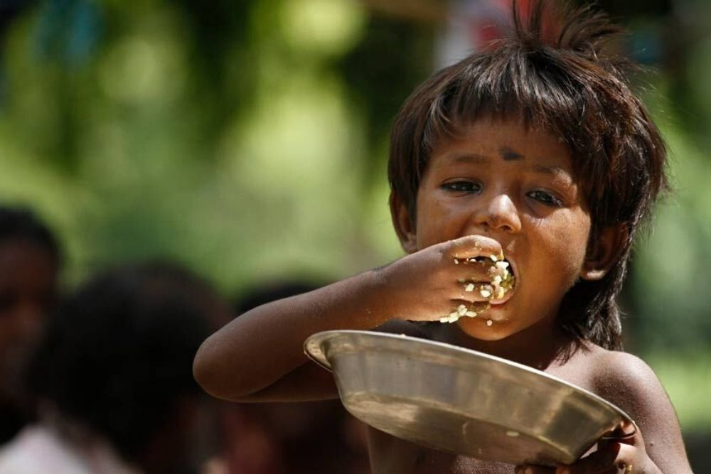
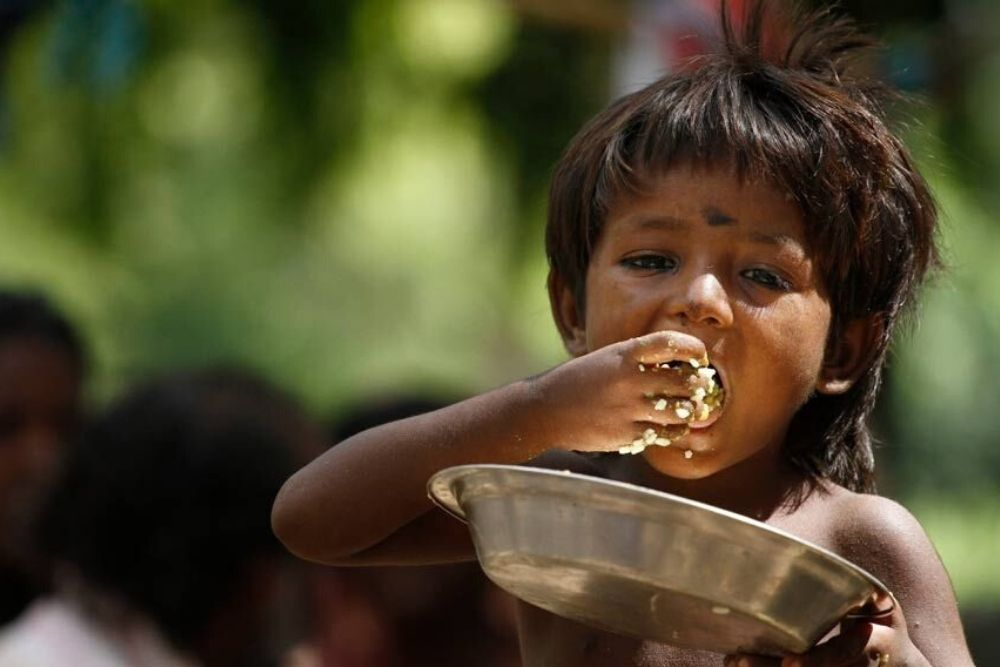

Here's a brief introduction to the key aspects of food wastage:
Scale of the Problem: Food wastage is a staggering problem worldwide. Approximately one-third of the food produced for human consumption is lost or wasted each year. This amounts to billions of tons of food and has far-reaching implications.
Causes: Food wastage occurs due to a variety of factors, including overproduction, inadequate storage and transportation, consumer behavior, and quality standards that lead to the rejection of "imperfect" but edible food.
Consequences: Food wastage has significant environmental, economic, and social consequences. It contributes to greenhouse gas emissions, strains valuable resources, and exacerbates hunger and malnutrition.
Environmental Impact: When food is wasted, all the resources used to produce it, such as water, land, and energy, also go to waste. Food in landfills produces methane, a potent greenhouse gas.
Economic Costs: Food wastage comes with economic costs, from the expenses of production and transportation to disposal costs. These costs affect both individuals and the food industry.
Social Implications: Millions of tons of food are thrown away while millions of people around the world go to bed hungry. Reducing food waste can help alleviate global hunger.
Solutions: Addressing food wastage involves a range of solutions, including improved food management and distribution, changes in consumer behavior, and efforts to rescue and redistribute surplus food to those in need.
In sum, food wastage is a complex problem with far-reaching consequences, but it is also a problem that can be mitigated through awareness, education, and concerted efforts at various levels, from individuals and households to businesses and governments. Reducing food wastage is not only about preserving resources and reducing environmental impact but also about ensuring that food reaches those who need it most.